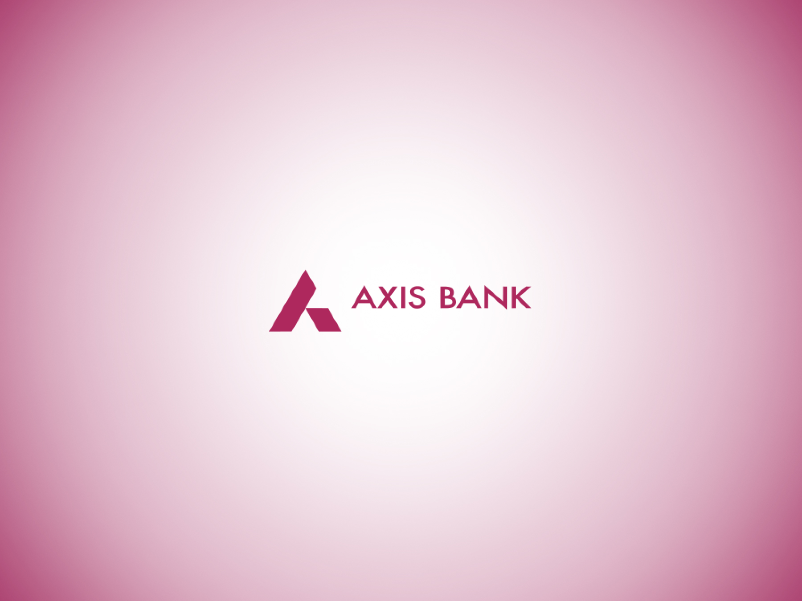
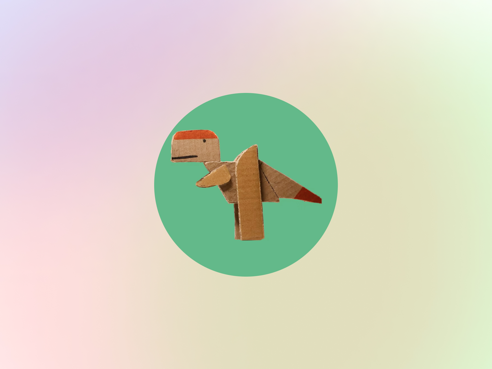
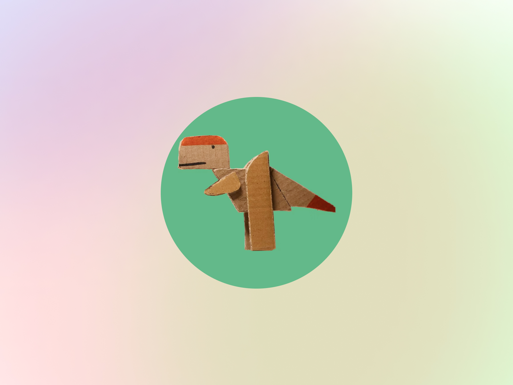

Axis Bank
strategy • UX • sound

strategy • UX • sound
interaction design • mixed reality • exhibition
 

learning experience • interaction • phygital play
industrial • interaction • sounds and lights
I've spent my life (thus far) playing, breaking and making, driven by the thrill of transforming thorny problems into elegant solutions. There's a special magic in collaboration that energizes me, when diverse minds create something none of us could have imagined alone. My practice flows between extremes—zooming out to envision strategic possibilities, then diving deep into pixel-perfect details. I thrive in the rapid prototype and the thoughtful refinement, the cross-functional workshop and the focused execution. This constant movement between scales helps me see connections that are easy to miss. Beyond crafting "beautiful" interfaces lies something more profound: the belief that design can reshape our relationship with technology, with each other and with our world. Every project, however small, carries this potential—to leave things a little better, a little more human, than I found them.
leading industrial and interaction design for sleep
led the design of sonic branding for mobile banking app, creating a cohesive sound design system across 7+ user touchpoints
designed a game for financial literacy, testing with 500+ users in progress
collaborated with engineers, product managers, and marketing teams to align digital branding strategy and advocate for design
redesigned learning experiences for grades 3-8
developed and tested a pictionary-based tool
taught English, Social Science, Science, and Mathematics to 28 students across the 6th, 7th and 8th grades
created ‘Shor-Sharab-A’ for 17 Fellows which concentrated on building a more friendly classroom presence using theatre
created ‘the open art collective’ for more than 50 students as a platform to promote artistic expression
designed learning material which reached 2000+ attendees
led a team of 12 to achieve recognition from the government of telangana
developed service process to use machine learning algorithms that transforms scooter errors into specific service tasks
designed and developed HMIs using SIMATIC for bottling plants in Hungary
I combine a background in electrical engineering with expertise in play experience design to attempt to build the world in a not-so-boring way.
My unconventionally transdisciplinary approach allows me to navigate complex challenges while keeping the human at the center.
My design philosophy emerged from a childhood spent taking apart perfectly functional electronics and a young adulthood spent trying to reassemble them with "improvements" that almost always already worked perfectly fine. These early experiments in technological hubris evolved into something resembling a career where I now design experiences at the messy intersection of humans, play, and technology. I believe design should leave the world slightly more interesting than it found it. Sometimes that means solving urgent problems. Sometimes that means creating beautiful solutions to problems nobody knew they had. Either way, I'll be here at the drawing board, asking "what if?" and occasionally "why not?" but also "is this strictly necessary?"
featured work - truth by design
presented work "Spaces x Mental Well Being"
featured project - versaTILE: modular furniture
top research practicum - a study into the prediction of academic performance using social cognitive determiners